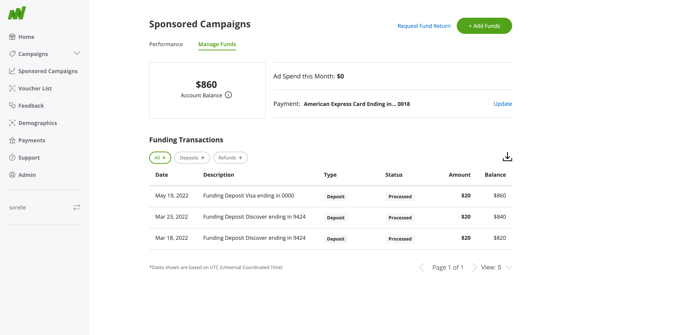
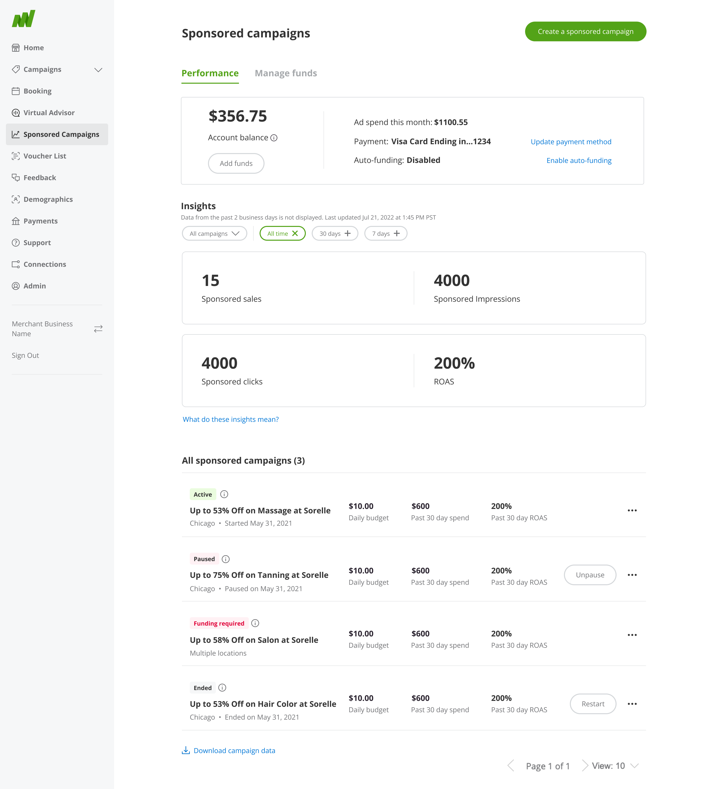
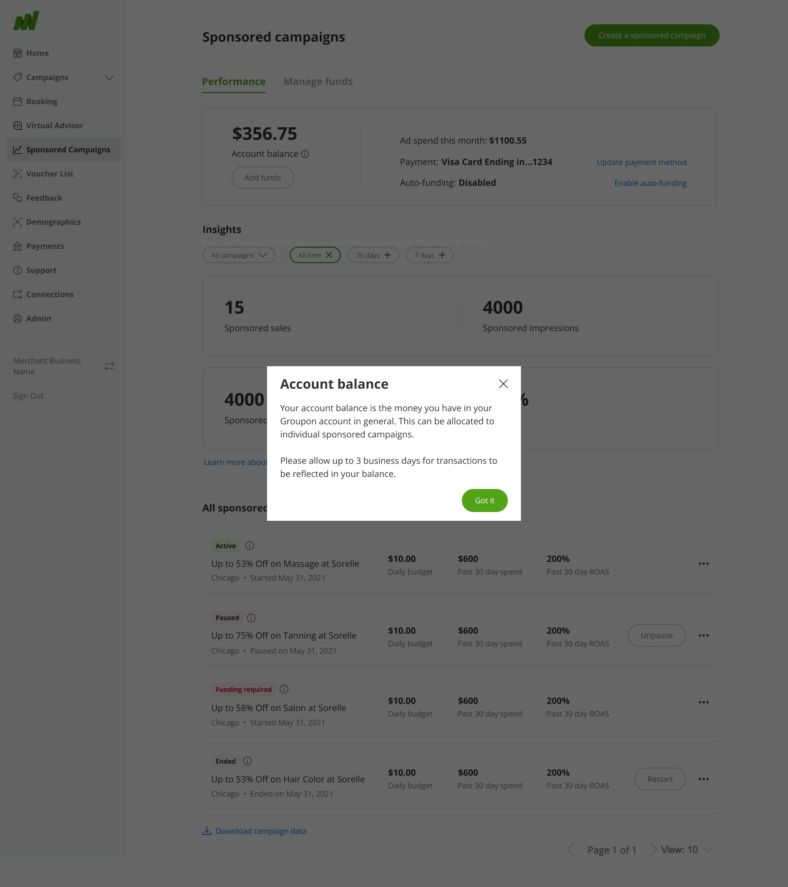
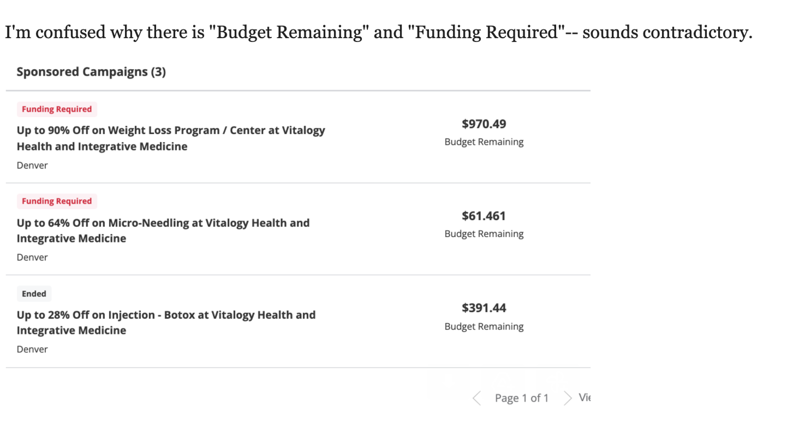
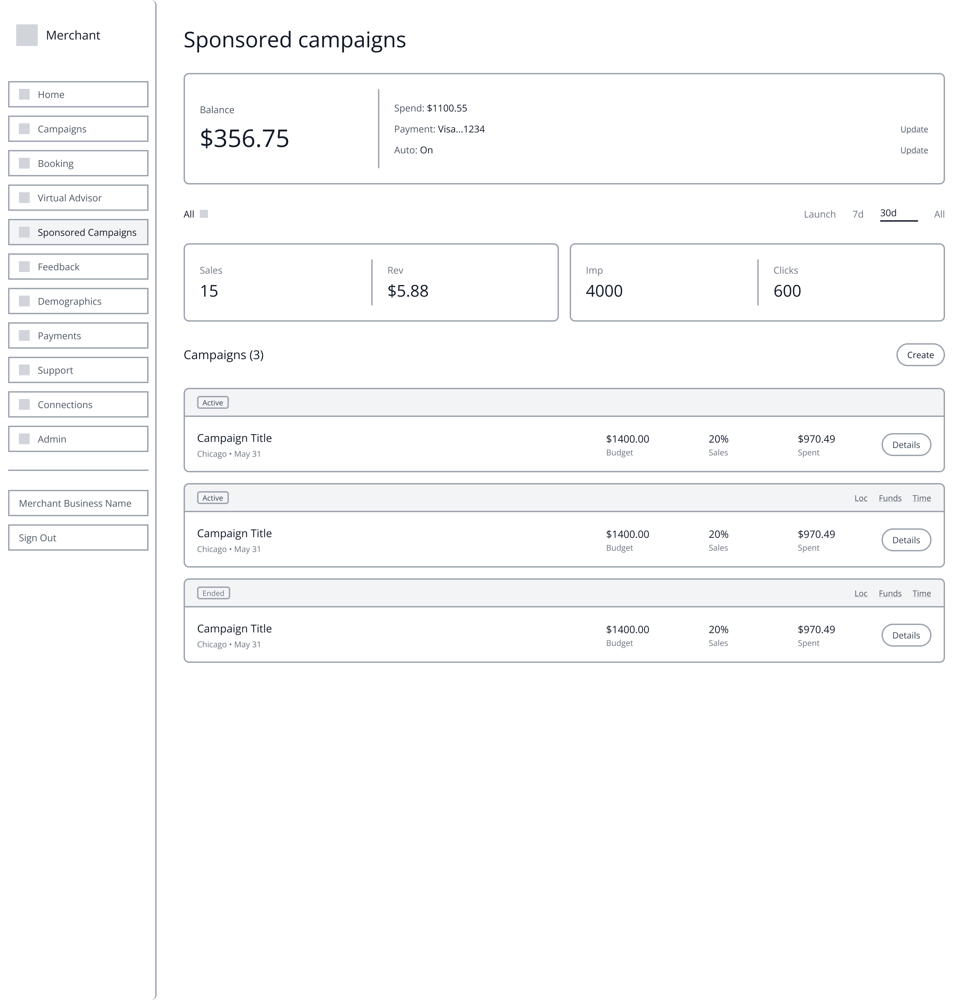
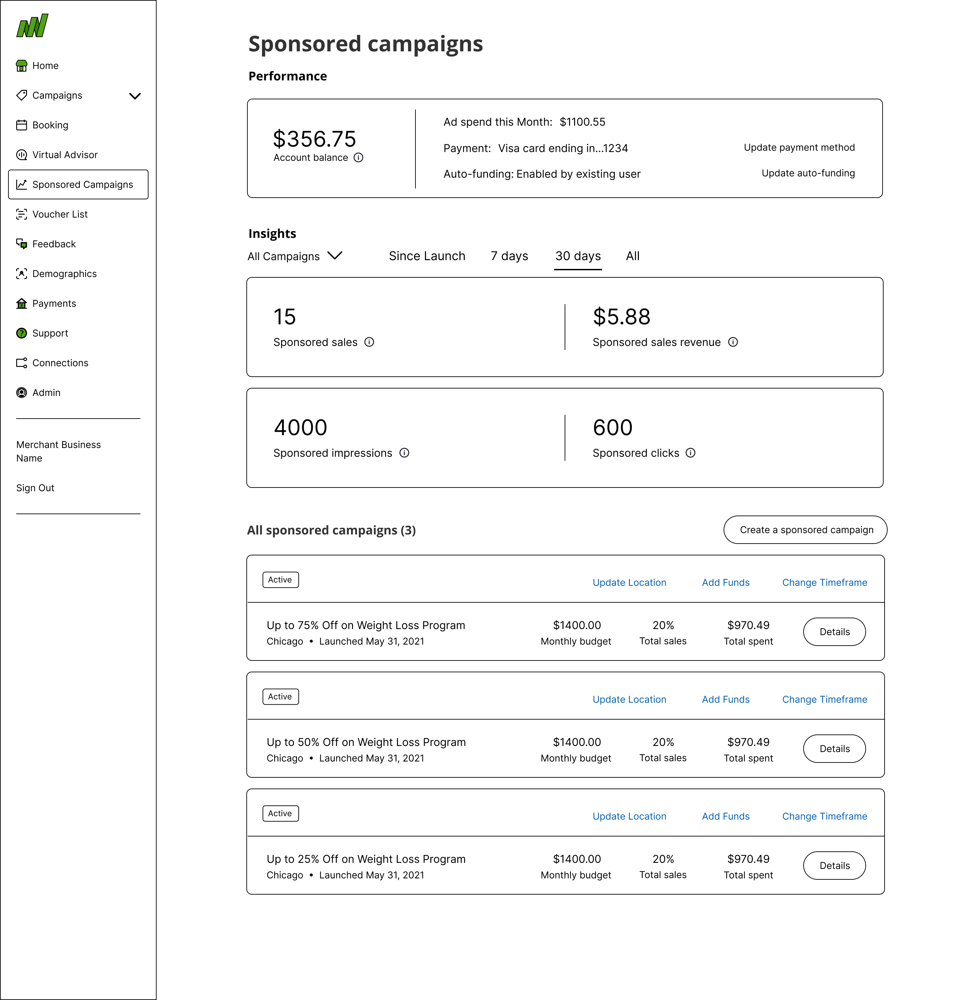
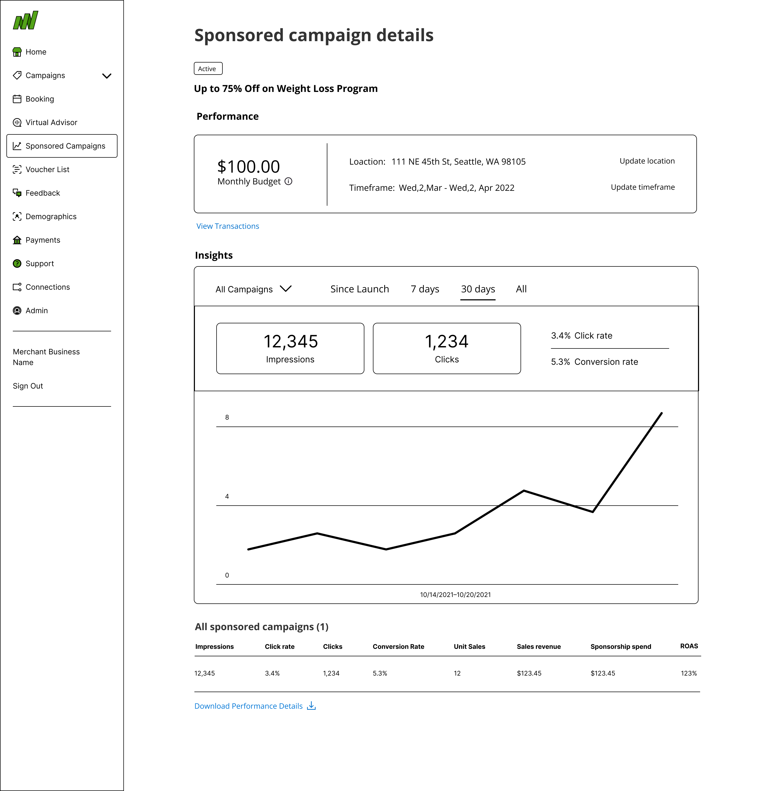

Before: 2 conflicting numbers

After: 1 clear number

Reimagining the merchant experience to empower local businesses.

Groupon merchants couldn't tell whether they were looking at their account balance or their campaign budget, two numbers that were supposed to tell the same story, but often didn't match. I led the redesign of the merchant dashboard to make spending clear, trustworthy, and easy to act on.
Merchants saw two numbers that were supposed to match and often didn't, and nothing on screen explained why.
Merchants relied on two numbers that looked like they should match, but structurally never could. Account Balance was wallet-level: the total a merchant had deposited. Budget Remaining was scoped to a single campaign's monthly budget, which reset every 30 days. Nothing on screen explained that distinction, so every mismatch between the two read as a bug rather than how the system was designed to work. Add in no visibility into campaign-level spending, and the result was a dashboard that looked precise but felt untrustworthy.
“You spent my $1400 on sponsored campaigns with nothing to show for it, and there's no record of how that was spent.”
Bill S. Merchant
A closer look at the solutions that improved efficiency and user satisfaction.
Redesigned Dashboard. Account Balance and Budget Remaining finally read as two different things. Clear visual separation and tooltips replace the confusion that eroded merchant trust.

Campaign Details with Metrics. Granular, real-time spending breakdown by campaign, the visibility merchants never had into where their budget was actually going.

Add Funds Alert. Proactive alerts catch a low Account Balance before it interrupts a live campaign, instead of merchants finding out after the fact.

Statistics Education Modal. An interactive guide connecting impressions, clicks, and ROAS back to actual budget and performance, turning unfamiliar metrics into decisions merchants could act on.

Account Balance tooltip. A single click now explains what "Account Balance" actually means: the total in a merchant's Groupon account, allocated across individual campaigns, with a plain note that transactions can take up to 3 business days to reflect. The exact question that used to end in a support ticket.

I interviewed five merchants, alongside a review of support tickets flagging the same recurring confusion. Merchants weren't one audience. Some were small business owners with no background in advertising or marketing terminology; others were ad-savvy or had marketing staff on hand. What they shared was disengagement. A lot of merchants simply stopped using Sponsored Campaigns because they didn't understand what they were looking at. The clearest evidence came straight from support, merchants were opening tickets over the same handful of screens, not because the numbers were wrong, but because they contradicted each other at a glance.
“I'm confused why there is "Budget Remaining" and "Funding Required", sounds contradictory.”
Craig H. MerchantAccount Balance and Budget Remaining were never meant to be the same number (one tracked the wallet, the other a single campaign's monthly cycle), but the platform never said so. That gap between what the system meant and what merchants assumed was the real problem to solve.
Sponsored Campaigns held a lot for a merchant to parse, and merchants weren't one audience to design for, some were small business owners with no advertising background, others were ad-savvy or had marketing staff on hand. The redesign worked from three principles: some information needed to be front-and-center, some actions needed to be front-and-center, and everything else stayed accessible without competing for the same attention.



Fig. 1–3: Wireframe evolution separating balance from budget and surfacing campaign-level detail.
Distinguish balance from budget. Account Balance and Budget Remaining were never the same number (one is wallet-level, one is scoped to a single campaign's monthly cycle), but nothing on screen explained that. Tooltips now make the distinction explicit instead of leaving merchants to assume a bug.
Show spending at the campaign level. Budget breakdowns are now scoped to each individual campaign instead of only reporting a blended account-level total, the detail merchants needed to actually plan a budget renewal.
Alert before balance runs out. A funding alert notifies merchants when their balance is low, rather than letting a campaign go dark and forcing them to discover it after the fact.
Teach the metrics, not just show them. The statistics modal explains what impressions, clicks, and ROAS actually mean for a merchant's budget, because raw numbers without context didn't build trust.
This shipped, but I left Groupon before the success metrics came in, so there's no post-launch data to point to. The clearest signal I have came from usability testing beforehand.
When we asked participants to explain Account Balance and Budget Remaining back to us in their own words, they could, correctly, without hesitation. That was the exact distinction the old dashboard never explained, and the one merchants kept opening support tickets over.
If I'd stayed to see it through, the metric that actually tests whether this worked is the campaign funding-lapse rate: the share of Sponsored Campaigns that go dark from a depleted Account Balance instead of getting topped up in time. That's the exact failure mode the Add Funds Alert and the balance/budget clarity were built to prevent, and unlike broader retention numbers, it isn't muddied by whether a merchant's campaign was actually performing well. Watching that rate drop is what would tell you the confusion was the real blocker, not just that usability testers could finally explain the numbers back to us.
This shipped, but I left before the results came in, so I never got to see how it actually performed. The strongest evidence I have is what came out of usability testing, not what happened after launch. The other thing this project taught me is that merchants weren't one skill level to design for. Some had never touched an ad platform before, others ran marketing for a living, and the answer wasn't picking one of them. It was deciding what had to be front-and-center for everyone and what could stay one click away.